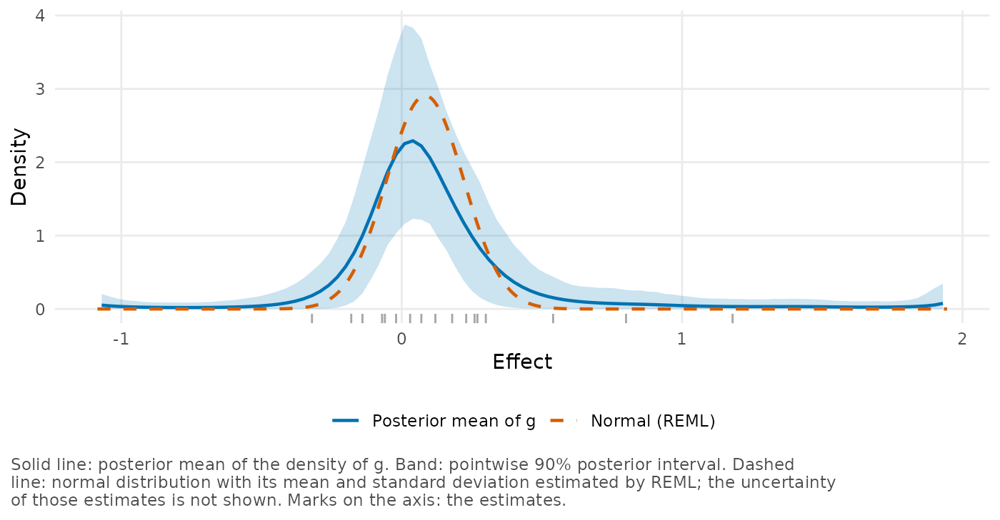
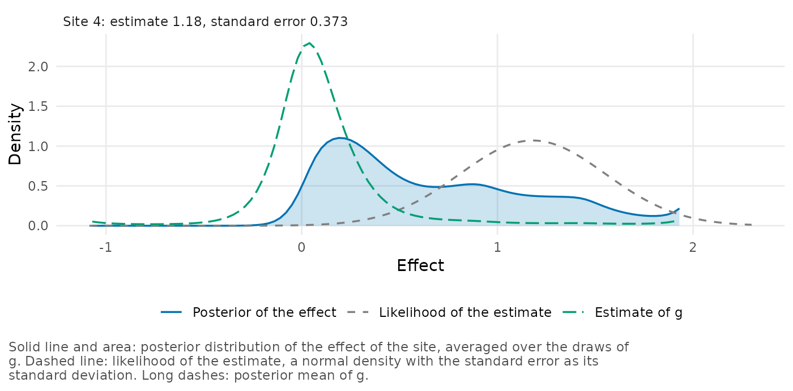
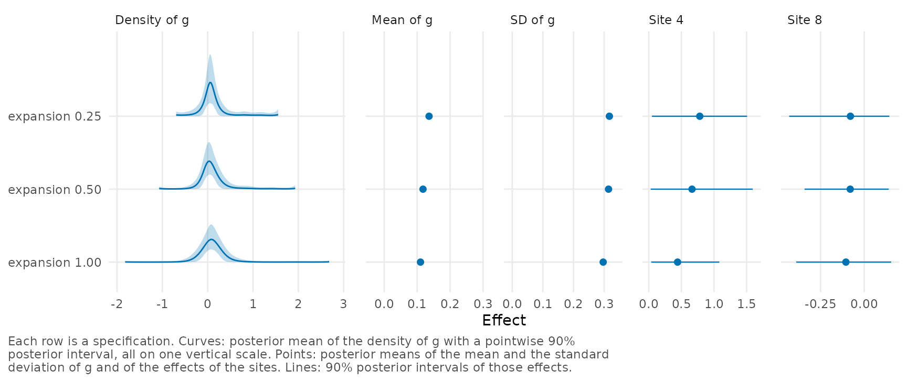

Nineteen studies of teacher expectancy
Source:vignettes/teacher-expectancy.Rmd
teacher-expectancy.RmdThis vignette is a case study of a small meta-analysis. A meta-analysis often has only a dozen or two studies, which is not many for a model that estimates the whole distribution of effects. We fit the model to 19 studies, and then use fits on other ranges of the grid and a simulation study to see how much of the result comes from the data.
We use the 19 studies of teacher expectancy that Raudenbush and Bryk (1985) analyzed. In these experiments, teachers were led to expect unusual intellectual growth from pupils who had in fact been chosen at random.
The teacher expectancy studies
The data frame raudenbush1985 has one row for each
study:
head(raudenbush1985[, c("study", "author", "year", "weeks", "yi", "sei")])
#> study author year weeks yi sei
#> 1 1 Rosenthal et al. 1974 2 0.03 0.1249000
#> 2 2 Conn et al. 1968 21 0.12 0.1469694
#> 3 3 Jose & Cody 1971 19 -0.14 0.1670329
#> 4 4 Pellegrini & Hicks 1972 0 1.18 0.3729611
#> 5 5 Pellegrini & Hicks 1972 0 0.26 0.3690528
#> 6 6 Evans & Rosenthal 1969 3 -0.06 0.1029563yi is the standardized mean difference in IQ between the
pupils the teachers expected more from and the others, and
sei is its standard error. weeks is the number
of weeks that the teachers had known their pupils before the expectancy
was induced. Raudenbush (1984) related the size of the
effect to this prior contact. See ?raudenbush1985 for the
sources.
The 8 studies with at most 1 week of prior contact have a mean
estimate of 0.44, whereas the other 11 have a mean of -0.04. We do not
use weeks in the model below. The model treats the 19
effects as draws from one distribution \(g\), so it describes the spread of the
effects without explaining it.
Fitting and checking the model
bayesEfron gives \(g\) no parametric
form. It places \(g\) on a grid of
equally spaced values, with a probability at each value, and estimates
those probabilities from the data. See
vignette("bayesEfron") for an introduction. The grid has to
begin and end somewhere, and no effect can lie outside it.
We fit the model with the default settings:
fit <- bayes_efron_fit(raudenbush1985, seed = 1985)The result of this call is in the package as
raudenbush_fit, thinned to 1 draw in 15. We load it instead
of running the sampler, and check it with diagnose().
fit <- raudenbush_fit
diagnose(fit)
#> <bef_diagnostic>
#> Model family: RE
#> Rhat max: 1.003 (lambda)
#> ESS bulk min: 994.5 (lp__)
#> ESS tail min: 1185 (lp__)
#> Divergences: 0
#> Max treedepth hits: 0
#> E-BFMI min: 0.3127
#> Runtime: 0.6065 sec
#> Grid:
#> lower end -1.07: at most 0% of a site's posterior in the outer 2% (site "8")
#> upper end 1.93: at most 1.6% of a site's posterior in the outer 2% (site "4")
#> sd of g: posterior 0.3123 (0.1169 to 0.5418); prior 0.8687 (0.7224 to 0.9498)
#> the central 99.9% of g spans 100% of the grid
#> Effective params: mean 10.62; sd 2.655In this output a site is a study. diagnose() reports no
failed check and no warning for the run, and
vignette("diagnostics") explains what each line means. By
default the grid covers the range of the estimates extended by half its
width on each side, unless a short preliminary fit narrows it. For these
data it is not narrowed and runs from -1.07 to 1.93, as the two
end lines show.
Two estimates of the spread
We plot the estimate of \(g\) and
its 90% band with plot_g(). Setting
observed = "rug" marks the 19 estimates on the axis, and
normal = TRUE adds, as a dashed curve, the usual normal
random-effects model fitted to the same estimates by restricted maximum
likelihood (REML).
plot_g(fit, observed = "rug", normal = TRUE)
Three of the estimates are above 0.5, from studies 4, 10 and 11, and
all three studies are in the less precise half. Next we print the
posterior summaries of \(g\) with
confint():
confint(fit, type = "g")
#> 90% posterior intervals (equal-tailed)
#> parameter mean lower upper site point
#> 1 mean_g 0.1167414 -0.008448635 0.2557006 mean_g 0.1167414
#> 2 var_g 0.1158763 0.013670979 0.2935576 var_g 0.1158763
#> 3 sd_g 0.3123410 0.116922959 0.5418093 sd_g 0.3123410According to the fit, the standard deviation of \(g\) is 0.31 (90% interval 0.12 to 0.54) and its mean is 0.12 (-0.01 to 0.26). The normal model has a mean of 0.08 and a standard deviation of 0.14, less than half as large. The two estimates agree about where most of the effects are but differ in the right tail. In the bayesEfron estimate 7.6% of the effects are above 0.5 (90% interval 0.1% to 20%), compared with 0.1% under the normal curve.
So the three large estimates can be read in two ways, one for each curve: as a tail of large effects, or as small effects with large sampling errors. With 19 studies we can’t tell which is right.
The study with the largest estimate
Study 4 has the largest estimate, 1.18, and the largest standard
error. We plot the posterior distribution of its effect with
plot_site_posterior():
plot_site_posterior(fit, sites = 4)
Its posterior distribution has a peak near the center of \(g\) and a long shoulder that extends past
the estimate to the upper limit of the grid. We summarize it with
site_summary() and two calls to
exceedance_prob():
site_summary(fit, sites = 4)[, c("label", "estimate", "se", "mean", "lower",
"upper")]
#> label estimate se mean lower upper
#> 1 4 1.18 0.3729611 0.6578475 0.02838201 1.610683
exceedance_prob(fit, threshold = 0.3, direction = "below", sites = 4)
#> 4
#> 0.3221415
exceedance_prob(fit, threshold = 0.8, sites = 4)
#> 4
#> 0.3633264About a third of the probability is in each of three regions: the effect is below 0.3 with probability 0.32, between 0.3 and 0.8 with probability 0.31, and above 0.8 with probability 0.36. A distribution of this shape is better summarized by its 90% interval, 0.03 to 1.61, than by the posterior mean of 0.66. We can say that the effect is probably positive, and not much more. By contrast, the normal model has no long tail, and it shrinks the same estimate to 0.21.
Sensitivity to the range of the grid
No effect can lie beyond the limits of the grid, and with few studies
the data carry little information about the part of the range that has
no estimates, so the range is a choice that the results may depend on.
compare_efron_grids() fits the model on several ranges. In
the call below we extend the range of the estimates on each side by
0.25, 0.5 (the default) and 1 times its width, and ask for the posterior
means of studies 4 and 8.
comparison <- compare_efron_grids(raudenbush1985, L = 101, M = 6,
expansion = c(0.25, 0.5, 1),
sites = c(4, 8), seed = 1985)Its result also comes with the package, and we read and plot it:
comparison <- readRDS(system.file("examples", "raudenbush_ranges.rds",
package = "bayesEfron"))
plot(comparison)
Each row is one range. Across the three ranges the mean and the standard deviation of \(g\) change little, and the standard deviation stays between 0.30 and 0.32. Study 8, which has the smallest estimate, does not move much either. However, the posterior mean of study 4 falls from 0.78 on the narrowest range to 0.66 on the default and 0.44 on the widest. The reason is in the right tail of \(g\). As the range widens, the estimated probability of an effect above 0.8 falls from 6.8% to 4.6% and then to 1.9%.
Printing the comparison shows the checks for each fit:
comparison
#> <bef_grid_comparison> 3 specifications, best first
#>
#> In every row: grid_method = paper_realdata, component = point, L = 101, M = 6
#>
#> expansion lower upper elpd_loo se_elpd_loo elpd_diff se_diff mean_g sd_g
#> 0.50 -1.070 1.93 -5.22 4.38 0.000 0.000 0.118 0.314
#> 0.25 -0.695 1.56 -5.35 4.18 -0.127 0.300 0.136 0.317
#> 1.00 -1.820 2.68 -5.72 4.22 -0.494 0.537 0.110 0.297
#> site_4 site_8 max_rhat divergences max_pareto_k end_mass adequate
#> 0.663 -0.0802 1.00 0 0.142 1.35e-02 TRUE
#> 0.782 -0.0792 1.01 18 0.216 5.62e-02 TRUE
#> 0.442 -0.1050 1.00 0 0.276 2.66e-05 FALSE
#>
#> Rows with convergence or PSIS problems: 2
#> A specification that did not converge should not be selected on elpd_loo alone.
#>
#> Rows in which a site has more than 5% of its posterior in the outer 2% of the grid: 2
#>
#> elpd_loo does not separate these specifications: all are within two standard
#> errors of the best. Compare sd_g and the site columns.The notes under the table flag its second row, the narrowest range.
One study there has more than 5% of its posterior probability in the
outer 2% of the grid, at the upper end, and the run has divergent
transitions, so we set this range aside
(vignette("diagnostics") describes both checks). The widest
range has a smaller problem. With the 101 grid points that the call
fixes, its grid is a little coarser than the package recommends
(adequate is FALSE): a rough estimate of the
spread of the effects is 3.7 grid spacings, and at least 4 are
recommended. As the last note reports, leave-one-out cross-validation
does not separate the three ranges. See
vignette("choosing-a-grid") for how to read such a
comparison.
Between the default and the widest range, nothing in the data lets us decide which posterior mean is right. A report on study 4 should therefore state the range of the grid together with the posterior mean.
A simulation with 19 studies
To see what the two analyses make of 19 studies when the truth is known, we simulated data sets with the 19 standard errors of these studies and true effects from one of three distributions:
- a normal distribution with the standard deviation that REML estimates, 0.14;
- a normal distribution with the larger standard deviation that bayesEfron estimates, 0.31;
- the posterior mean of \(g\) itself, with its right tail (the probability of each grid point was spread evenly over its cell).
We fitted each of 200 data sets for each distribution with the
defaults of bayes_efron_fit() and with the normal model,
holding its mean and standard deviation at their REML estimates (a
plug-in analysis). The rows labeled known g in the table
below use the distribution that the effects were drawn from, which no
analysis of real data can do. The table comes with the package. We leave
out its rows for a second bayesEfron fit, with
adapt_delta = 0.99, until later.
sims <- read.csv(system.file("verification", "few-studies.csv",
package = "bayesEfron"), check.names = FALSE)
shown <- sims[sims$method != "bayesEfron, adapt_delta = 0.99", ]
data.frame(effects = shown$scenario, analysis = shown$method,
true_sd = round(shown$true_sd, 2), sd = round(shown$sd_mean, 2),
sd_inclusion = shown$sd_inclusion,
inclusion = round(shown$inclusion, 3),
length = round(shown$length, 2),
largest_inclusion = round(shown$largest_inclusion, 3),
largest_error = round(shown$largest_error, 2))
#> effects analysis true_sd sd sd_inclusion inclusion length
#> 1 normal, SD 0.14 bayesEfron 0.14 0.23 0.840 0.904 0.44
#> 2 normal, SD 0.14 normal 0.14 0.12 NA 0.732 0.30
#> 3 normal, SD 0.14 known g 0.14 0.14 NA 0.903 0.35
#> 4 normal, SD 0.31 bayesEfron 0.31 0.47 0.740 0.899 0.58
#> 5 normal, SD 0.31 normal 0.31 0.31 NA 0.882 0.52
#> 6 normal, SD 0.31 known g 0.31 0.31 NA 0.894 0.53
#> 7 fitted g bayesEfron 0.35 0.44 0.755 0.907 0.53
#> 8 fitted g normal 0.35 0.31 NA 0.849 0.49
#> 9 fitted g known g 0.35 0.35 NA 0.903 0.47
#> largest_inclusion largest_error
#> 1 0.895 0.07
#> 2 0.670 -0.01
#> 3 0.910 0.00
#> 4 0.895 0.07
#> 5 0.845 0.00
#> 6 0.895 0.01
#> 7 0.905 0.01
#> 8 0.685 -0.14
#> 9 0.890 0.00The columns are:
-
true_sdandsd: the standard deviation of the distribution, and the mean of its estimates. The estimate is the posterior mean of the standard deviation of \(g\) or the REML estimate. -
sd_inclusion: for bayesEfron, the proportion of data sets in which the 90% interval for that standard deviation contains the true value. -
inclusion: the proportion of the true effects inside the studies’ 90% intervals, averaged over the data sets. We call this the coverage of the intervals. -
length: the mean length of those intervals. -
largest_inclusionandlargest_error: for the study with the largest estimate in each data set, the proportion of data sets in which its interval contains its true effect, and the mean of its posterior mean minus its true effect.
Under all three distributions the bayesEfron intervals have coverage close to 0.90 (the Monte Carlo standard errors are about 0.006). However, they pay for it in length, and are 24%, 9% and 13% longer than the intervals from the known distribution. The normal model’s plug-in intervals cover 73%, 88% and 85% of the true effects, because they treat two estimated numbers as known. In 10.5% of the data sets from the first distribution, REML estimates the standard deviation as zero, and every interval is a point.
The standard deviation of \(g\) is estimated too large under all three distributions, and its 90% interval contains the true value in fewer than 90% of the data sets. The likely cause is the prior distribution, which favors a \(g\) spread over the range, but we have not isolated it.
For the real data this has one consequence above all. Under each of the three distributions the bayesEfron estimate exceeds the REML estimate on average, by factors of 1.9, 1.5 and 1.4. So a gap between the two estimates is not by itself evidence of a tail: data of this size produced one under every distribution that we tried. But the simulation does not account for all of the gap in the real data. The pair seen there, a posterior mean of at least 0.31 with a REML estimate of at most 0.14, occurred in none of the 600 data sets. One thing that the simulation leaves out is a relation between a study’s effect and its precision. Both models assume that there is none, and prior contact may produce one here. This is a conjecture that we have not tested.
For the study with the largest estimate, each analysis does well when the true distribution looks like its own estimate of \(g\). Under both normal distributions the bayesEfron posterior mean is too high by 0.07 on average, and the normal model’s is nearly unbiased. Under the fitted \(g\) the normal model is too low by 0.14, and bayesEfron is nearly unbiased. We cannot tell from the data which case we are in. The intervals for that study behave differently. Under all three distributions the bayesEfron interval contains the true effect in about 90% of the data sets (a proportion from 200 data sets has a Monte Carlo standard error of about 2 percentage points), whereas the normal model’s interval contains it in 67.0%, 84.5% and 68.5%.
Finally, the stored fit has no divergent transitions, but of the 200
default fits for each distribution, 120, 128 and 70 had at least one.
With adapt_delta = 0.99 the counts were 43, 40 and 23, and
the summaries did not change, with coverage moving by about 0.001 at
most. Among the default fits, those with divergent transitions also had
the same coverage as the others, to within 0.011. Note that these are
averages over data sets, and not evidence that the warning can be
ignored in a given fit.
Recommendations for a meta-analysis of this size
Our simulation is limited to one set of 19 standard errors, three distributions, normal noise, and effects unrelated to precision. Within those limits, this is what we recommend for 19 studies like these.
- Start with
adapt_delta = 0.99, which cut the number of fits with divergent transitions by about two thirds without changing the results. - Report the intervals of the studies and not only their posterior means. The intervals had coverage close to 0.90 under every distribution that we tried, whereas the posterior mean of the study with the largest estimate was too high under two of them.
- For such a study, fit a narrower and a wider range with
compare_efron_grids()and report the range together with the posterior mean. - Report the standard deviation of \(g\) with its interval, and say that with so few studies the estimate tends to be too high.
- Do not present the shape of the estimated \(g\) as a finding. The band in the first plot is wide, and the same model overstates the spread of a normal distribution.
The normal model is simpler, but that doesn’t make it the safer choice. Its plug-in intervals contained too few of the true effects under all three distributions, most of all for the study with the largest estimate. We have not made the comparison with a normal model that accounts for the uncertainty in its variance, as a fully Bayesian one does.
raudenbush_fit has only 800 of the 12,000 draws of its
run. For a report, run the bayes_efron_fit() call above
yourself, with adapt_delta = 0.99 added. A fit that you run
stores every draw.